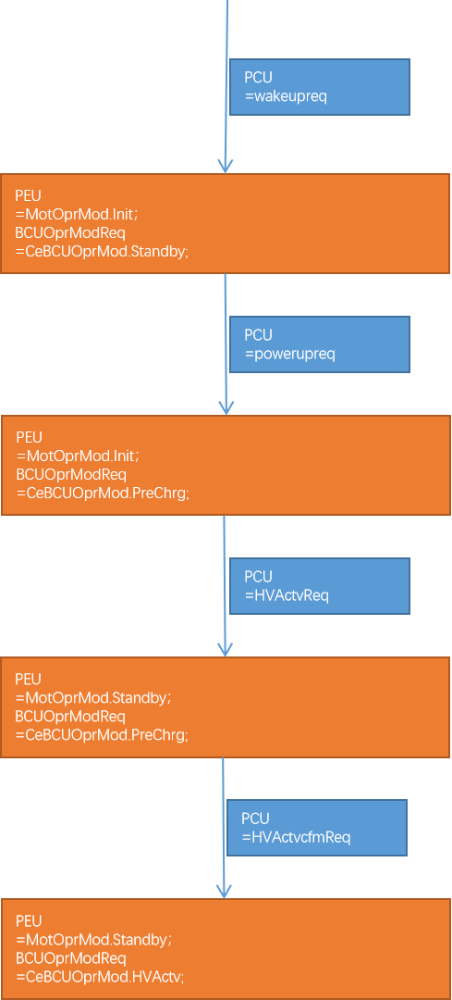

В данной модели автомобиля на основе различных сценариев использования пользователя, с учетом состояния автомобиля и рабочего состояния каждого контроллера, инициируется запрос на включение/выключение высокого напряжения, а контроллеры, такие как тяговая аккумуляторная батарея (BMS), контроллер электродвигателя (PEU) и т.д., выполняют действия по включению/выключению питания в соответствии с согласованными условиями и последовательностью, и возвращают результаты.
К высоковольтным компонентам относятся: тяговая аккумуляторная батарея (BMS), тяговый электродвигатель, контроллер электродвигателя (PEU), бортовое зарядное устройство (OBC), электрический Компрессор, PTC.
Поскольку речь идет о высоком напряжении, для работы с высоковольтными проводами и соответствующими высоковольтными Компонент требуются квалифицированные специалисты.
